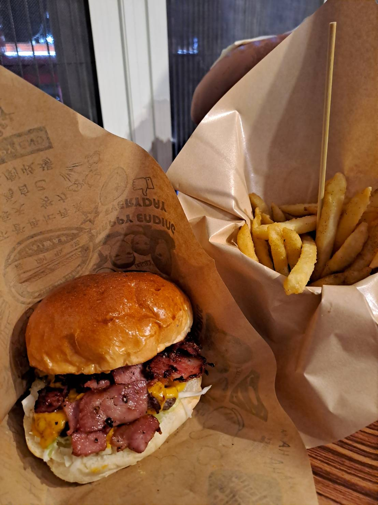
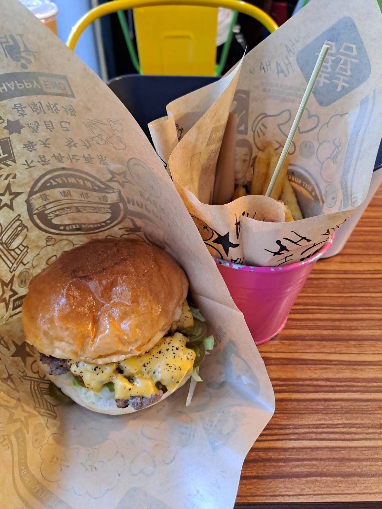

食記 - 喜劇收場
-

-

-

-

地址：
交通方式：
搭公車 (藍1, 5608等等) 到東門國小下車，喜劇收場就在旁邊。
心得：
位置很多，通常不需要等待，來吃之前可以去FB粉絲團確認有沒有休假
漢堡麵包很有彈性，外表有光澤，麵味很香，就算只有漢堡皮我也可以吃得很開心，不是普通漢堡的麵包，這點真的很喜歡也覺得這才是漢堡應該有的樣子
漢堡肉跟醬很搭，有很多種類的漢堡，目前吃5、6次左右每次都覺得很好吃，漢堡很有自己的特色。
炸物酥脆剛好，非常好吃，非常推薦；飲料的話無糖綠不錯，緩解罪惡感
環境很有自己的特色，很喜歡觀察老闆是怎麼佈置的，特別是廁所那隻狗，每次都能嚇到女友，我真的太喜歡那隻狗狗了
CP值很高，200塊左右能吃到很好吃的漢堡跟炸物配飲料，非常推薦
價位：
單一漢堡約 NT$200，套餐搭配薯條飲料約 NT $250